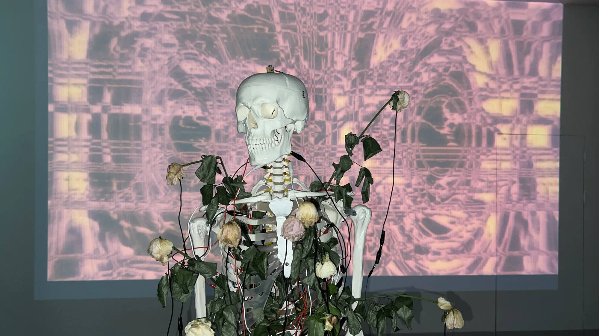

2026 / Meta Rose
The Funeral
Works within The Funeral connect touch, duration and intervention with living materials and responsive digital systems.
Format & installation
Enquiries may concern individual works within the project. The work, software version, physical components, installation requirements, price and edition terms are specified individually.